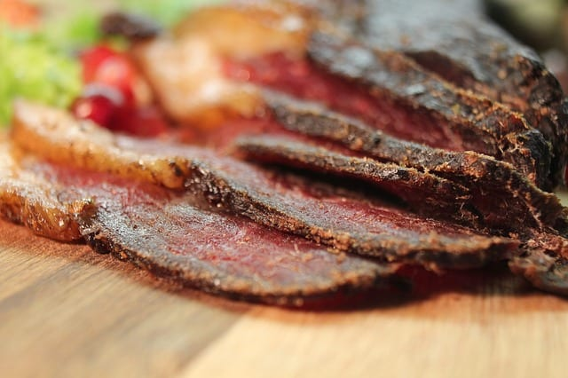

Biltong

What is biltong?
Biltong is an edible dried, cured meat snack that originates from South African countries.
To be more specific, this high protein snack is from South Africa, Zimbabwe, Malawi, Namibia, Botswana, and Zambia.
The word Biltong comes from the Dutch word 'bil' and 'tong' which respectively holds the meaning of "buttock" and "strip" or "tongue".
Ingredients
- Vinegar
- Salt
- Coriander
- Black pepper
- Brown sugar (optional)
Steps
- Toast the coriander seeds in a dry pan, then grind down in a pestle and mortar or spice grinder.
It should be mostly powder, with a few pieces of seed shells left in.
- Using a sharp knife, following the grain of the meat, cut into 1 inch (2.5cm) thick lengths and place in a non-metallic container.
- Combine all the spices and sprinkle into the meat. Sprinkle the vinegar on and rub everything in thoroughly whilst turning the meat with your hands.
- Cover the container and let your biltong cure for 24 hours in the fridge, turning and rubbing through the meat occasionally.
- Remove the meat from the container and pat dry with kitchen towels, taking care not to remove too much of the spice.
- Add a hook to the thickest end of each length. Plastic-covered paper clips make for a cheap solution.
Hang in your biltong box, or in a well aired, ventilated space with a fan blowing gently to increase air flow.
Do not point a fan directly at the meat (to avoid case hardening). Make sure none of the pieces are touching.
Place some newspaper below the meat to catch any liquid.
- Drying times will vary with humidity, airflow and temperature.
Test the readiness of your biltong every couple of days by squeezing the sides together with clean fingers.
If you feel any give in the meat, it's still 'wet' inside.
- Once ready, cut into thin slices with a sharp knife and enjoy some of the best meat you'll ever eat.